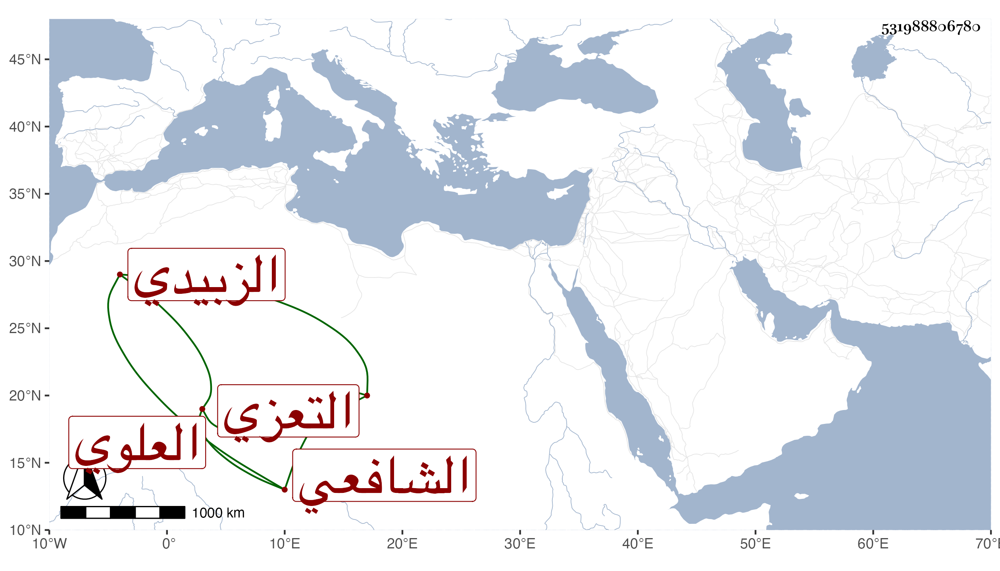

0902Sakhawi.DawLamic.ITO20230111-ara1.EIS1600.531988806780
Biography ID: 531988806780
417
محمد بن علي بن إدريس بن أحمد بن محمد بن عمر بن علي بن أبي بكر بن عبد الرحمن العلوي التعزي الزبيدي الشافعي والد أبي الطاهر محمد الآتي . انتفع به ولده في الفقه وغيره وسمع عليه كثيرا . وهو من أهل هذا القرن لكن ما رأيت ترجمته .
